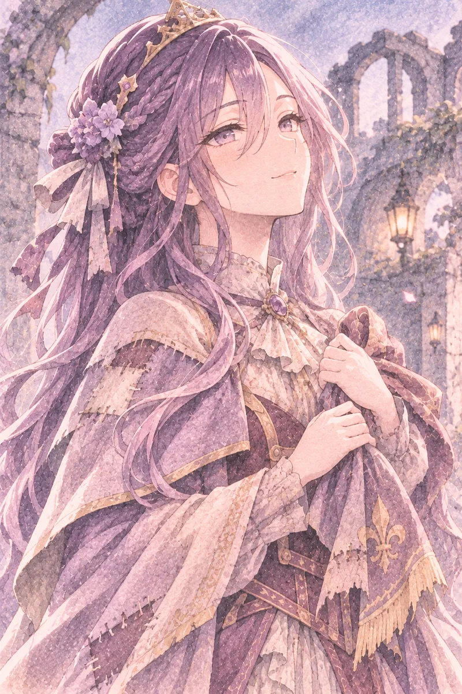
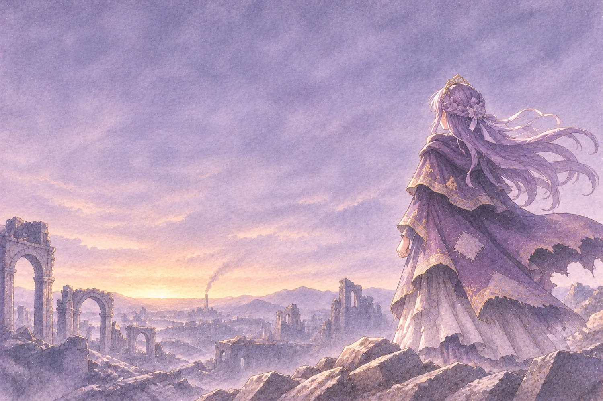
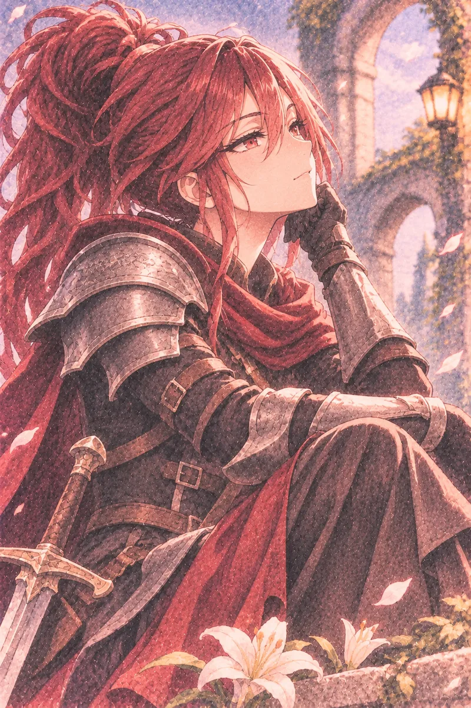
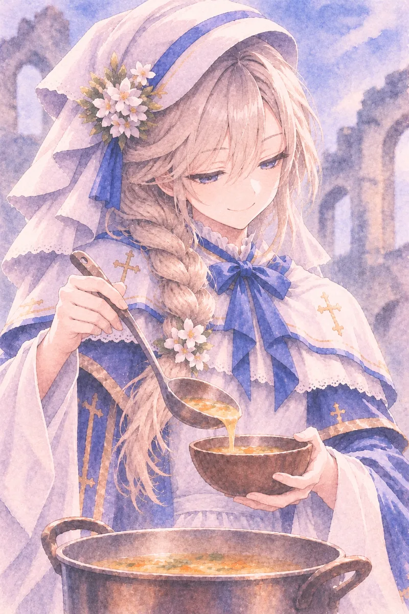
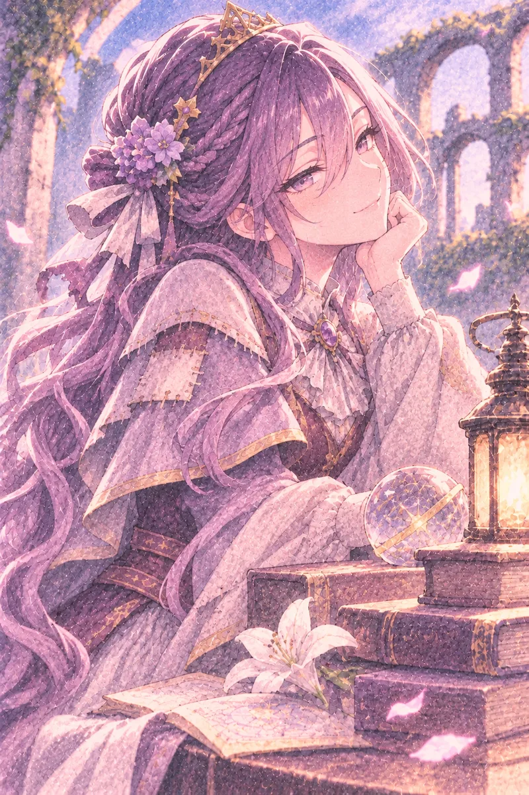
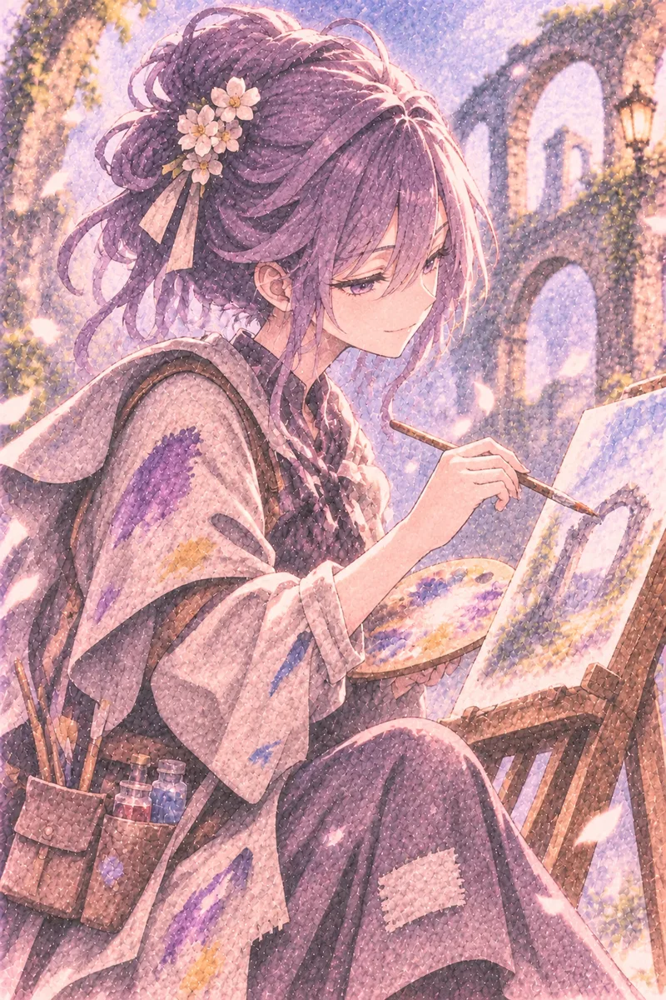
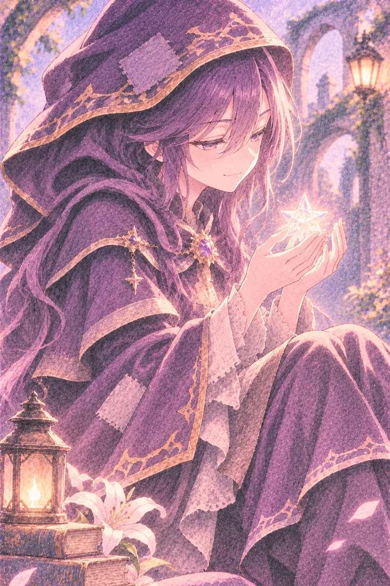
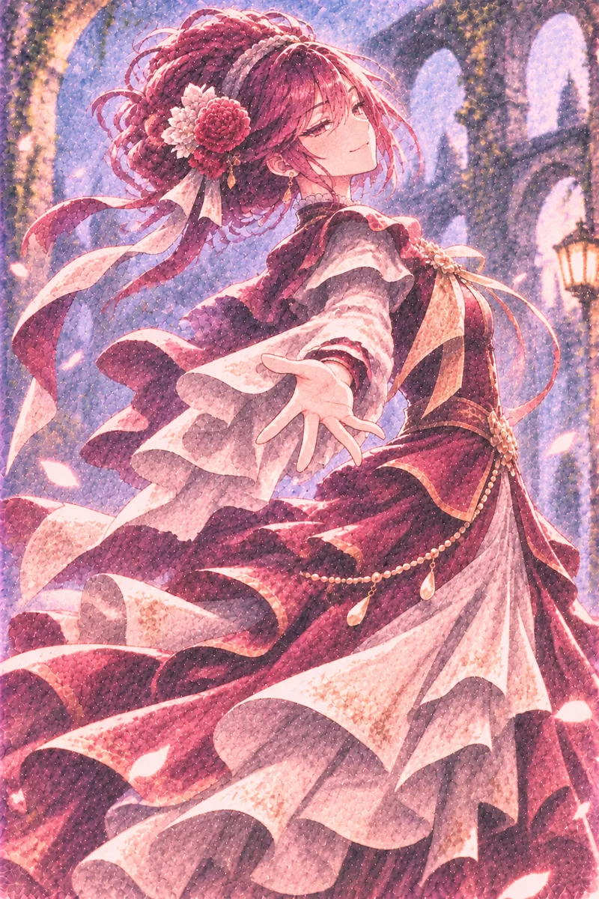
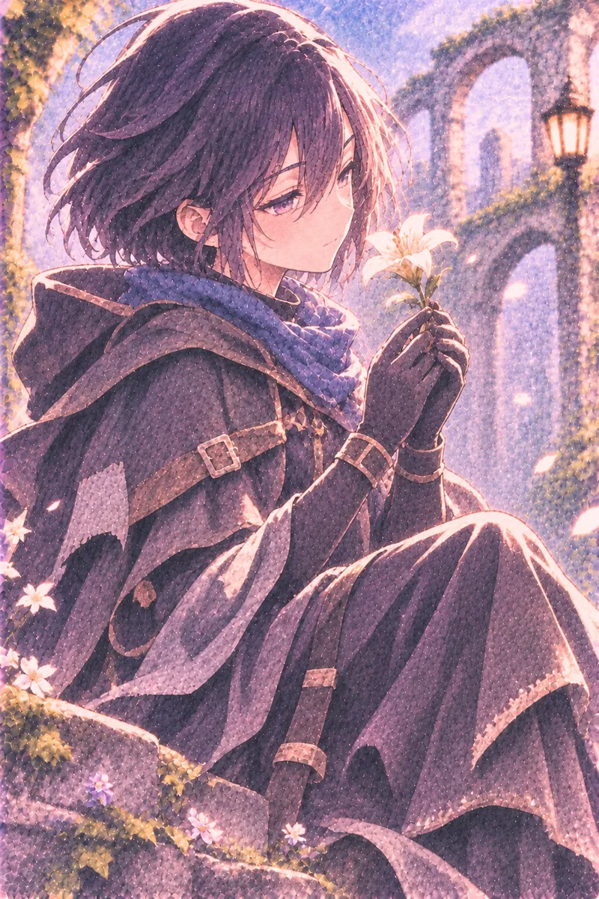
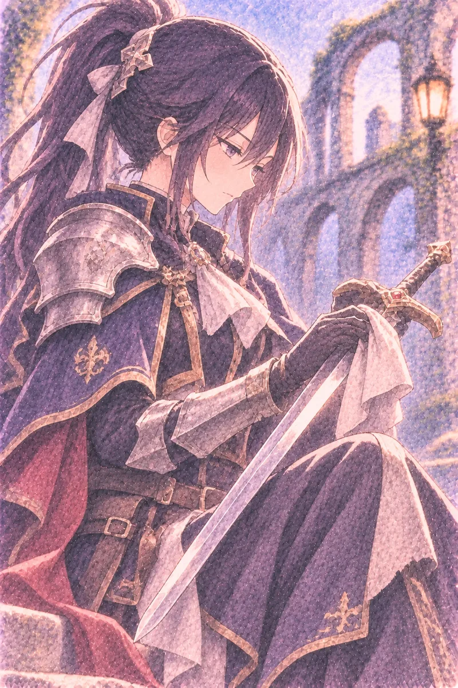

エリゼ
没落した第一王女
玉座も国も失ったのに、背筋だけは折れていない元王女。施しではなく、「対等な取引」ならば手を取ると言う。誇りをどう守り直すかで、物語が二つに分かれる。

瓦礫の上から、もう一度、立ち上がる。
『崩れゆく国で、明日を灯す』は、選択肢を選びながら読み進める、インタラクティブノベルです。かつて栄華を誇った王国は、戦と災いで瓦礫だけが残る亡国になりました。身分の上下は意味を失い、誰もが同じように、明日を諦めかけています。
転生してきた主人公は、望むだけの物資を生み出し、届ける力を持っています。ただし、出会う9人の女性は、施しを待つだけの人ではありません。元王女、元騎士、元道化師、元聖女、元宮廷画家、元宮廷魔術師、元舞姫、元密偵、将軍家の生き残り。みな、かつての誇りや居場所を失っても、まだ自分の足で立とうとしています。
主人公が差し出すのは、一杯の食事や一枚の毛布。そんな「当たり前」の積み重ねで、彼女たちは少しずつ、自分で立ち上がっていきます。主題は、救われることではなく、瓦礫の上から、自分の意志でもう一度歩き出すことです。ひとり一人の小さな変化を、ゆっくり読んでもらえるように作りました。
9人全員が、最初から選べます。気になる人から、どの順番でも読めます。

没落した第一王女
玉座も国も失ったのに、背筋だけは折れていない元王女。施しではなく、「対等な取引」ならば手を取ると言う。誇りをどう守り直すかで、物語が二つに分かれる。

忠誠を誓う主を失った、元近衛騎士
命じられることでしか動けなかった騎士が、自分の意志で剣を握り直すまで。「命令ではなく」と口にする日は来るのか。

笑顔を演じ続ける、元宮廷道化師
誰よりも明るく笑う人は、笑わなければ見捨てられると信じてきた。笑顔の下にある素顔と、少しずつ出会っていく。

孤児院を支え続ける、元聖女
子供たちに与えるばかりで、自分は何も受け取らない人。与えることと、受け取ることの両方を覚えていく物語。

描く理由を失った、元宮廷画家
記録のためだけに描いてきた画家が、もう一度、自分のために筆を持つまで。色を取り戻す日々の物語。

国の崩壊を自分のせいだと責める、元宮廷魔術師
折れた杖を前に、力を使うことを恐れている魔術師。小さな光をひとつ灯すところから、また歩き出す。

完璧な舞いを求め続けた、元舞姫
間違えることが許されなかった舞姫が、不完全なままで踊る喜びを知る。止まった足が、もう一度動き出す物語。

感情を閉ざして生き延びた、没落貴族の元密偵
何も感じないことで生き延びてきた人が、少しずつ温度を思い出していく。ぎこちない最初の微笑みまで。

将軍家ただ一人の生き残り
自分だけが生き残ったことを、ずっと責めてきた。「生きなければ」が、「生きたい」に変わる瞬間を描く。
人物との関係は、幸福度に応じて5段階の「絆ランク」で表されます。ランクが上がるたびに、画面の背景色も少しずつ変わっていきます。
| ランク | 目安 |
|---|---|
| 警戒 | 最初の状態 |
| 顔見知り | 50ポイント以上 |
| 友達 | 100ポイント以上 |
| 親友 | 180ポイント以上 |
| 唯一無二の相棒 | 250ポイント以上。特別な結末が見られる |
・この作品は、フィクションです。登場する国、人物、団体は、すべて架空のものです。
・作中のイラストは、画像生成AIを使って制作し、作者が選定・調整しています。BGMは、AI音楽生成サービス「Suno AI」で制作しています。
・物語には、戦で国や家族を失った人の描写が少しあります。刺激的な表現は含みません。
・保存データは、お使いのブラウザの中にだけ保存されます。ブラウザの閲覧データを消去したり、別の端末で開いたりすると、記録は引き継がれません。
はい、すべて無料です。登録やログインも要りません。
はい、スマホでの操作を中心に作っています。タップだけで進められます。パソコンのブラウザでも遊べます。
どの人物からでも大丈夫です。気になる人から選んでみてください。9人全員が最初から選べます。
画面右上のスピーカーボタンで、オン・オフを切り替えられます。ブラウザの設定によっては、最初のタップのあとに音が流れ始めます。
9人全員の、ルートAとルートBをどちらも読み終えると、キャラクター選択画面に特別編が現れます。
エンディングを見るたびに、自動でセーブされます。キャラクター選択画面の下のほうに、セーブデータをリセットするボタンがあります。